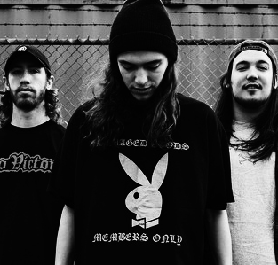
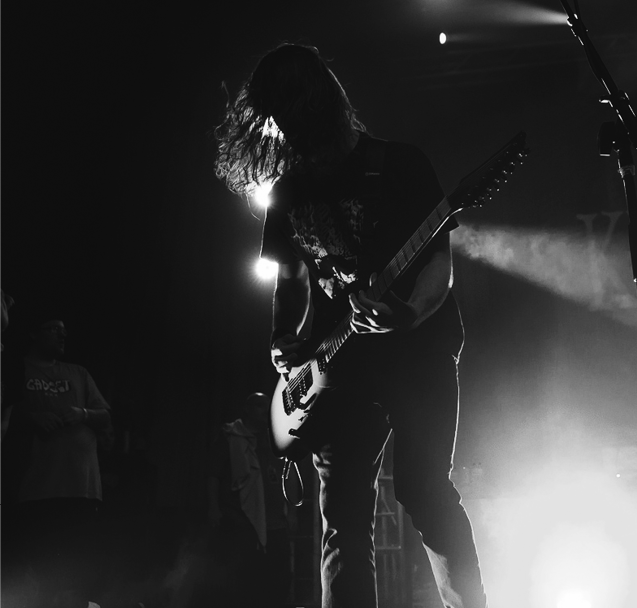

Knocked Loose’s debut EP clocks in at 13 minutes and contains all of the bite that the pitbull on the cover depicts. They also jump right into heavy topics from the beginning of the EP, starting with elitism within church communities on “The Gospel,” and rocketing into the topics of anxiety and fake friends. Pop Culture hits hard and fast and sets the framework for what the band would soon become.